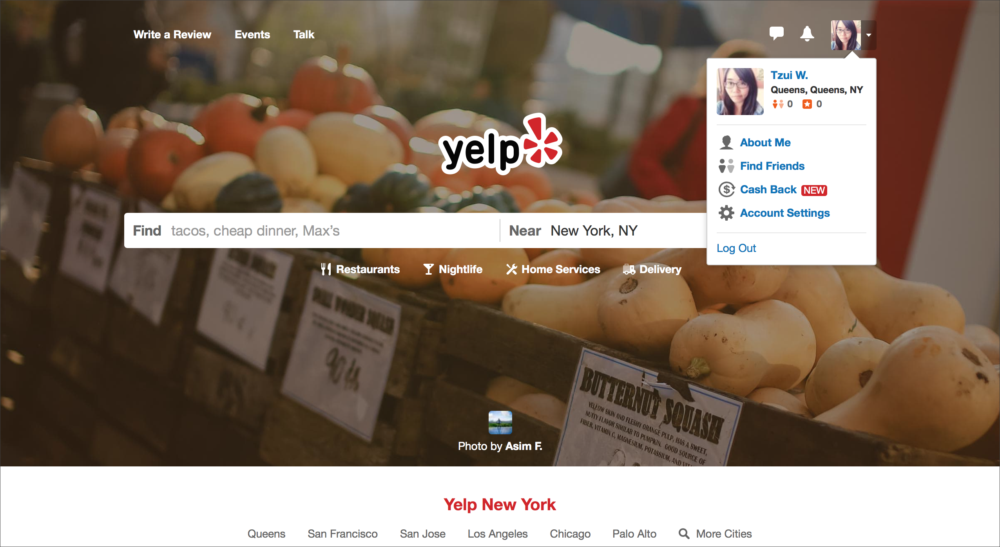
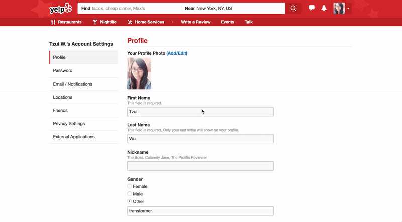
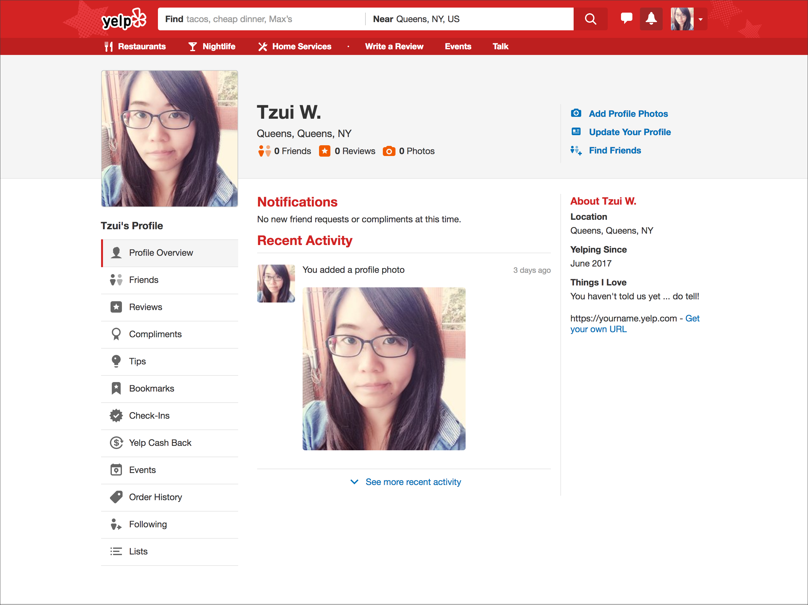

First, I start by clicking on the top-right, square photo that I set up yesterday. It appears as a drop-down menu that first shows my username, location and icons (friends and reviews) with zero value. Underneath, there are menu contents of About Me, Find Friends, Cash Back (New), Account Settings, and Log Out.
 Landing Pagew with profile drop-down.I chose to set up my account first by clicking on Account Setting.
1. Account Settings:
On this page, I can see a bunch of blank forms that Yelp asks me to filled out….(Gosh! I hate filling forms!!) I feel like the experience can be more intuitive instead of just make me read all the texts and understand what it means.
 Forms for account settings.For the rest of the settings, I will just skip them, since we are focusing on the user profile at this time.
2. About Me
An overall face-book profile of Yelp. Let’s divide the information into blocks.
 Page of user profile.Top
- Left: Profile photo from the left.
- Middle: Location, User Name with Friends, Reviews and Photos are in the middle space.
- Right: Add profile Photos, Update Your Profile, Find Friends.
Left
- A list of features with multiple activities that a user can do with the website.
Center
- Notifications
- Recent Activity: Wall posting reviews or changes of the status.
Right
- About Me: Location, Yelping Since (the day I joined Yelp), Things I love (edit in account settings), own Url of the Yelp profile.
 I use post-it to configure the segments on the page of user profile.
I use post-it to configure the segments on the page of user profile.
OK! So these are probably the most priority information that I have to know before dig into the design process. What I am going to do next is to reimagine a new way of presentation and experience of the user profile.
Photograph by Cel Lisboa.